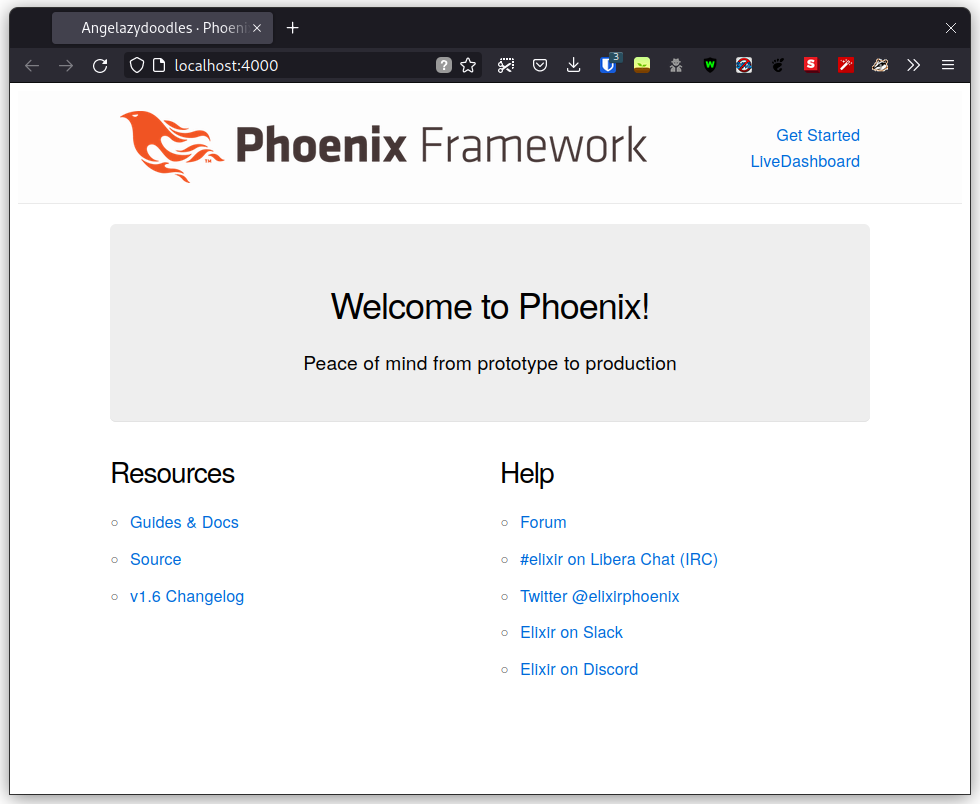
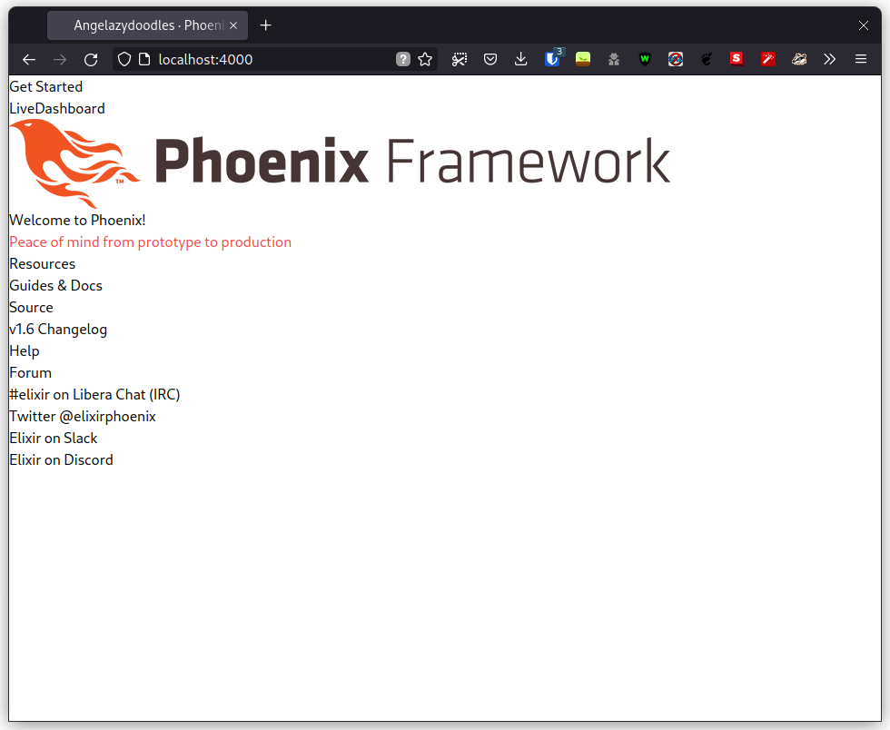
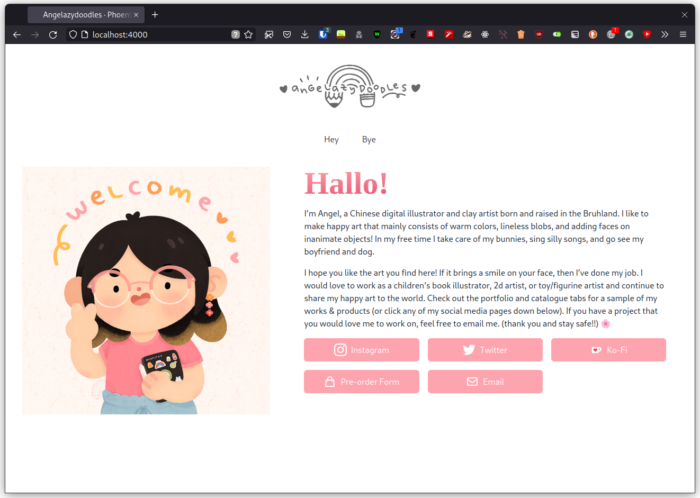

Creating Interactive Applications with No JS
Table of Contents
For the past few months I’ve been busy with working on SWAPI, studying Haskell, and getting distracted by a bunch of cool stuff like Nix and FreeBSD. I then realized that I haven’t been doing any web dev work, at all. So here I am, writing my first ever dev blog post about web dev, because I need something to show in case I start looking for a web dev position. Hello (maybe) future employer, I know how to code, I swear.
Developing web applications (or simple websites) without ever touching JS has
always been appealing to me. I don’t wish to work with it at all, and due to
that, I don’t remember much of its horrid standard library, and other shenanigans
like why both null and undefined exist, on top of so many strange implicit
type conversions. I’m going to have to stop myself here, because I don’t wish
for this to just be a blog about why I hate JS. It is, after all, a blog about
avoiding JS as much as possible.
So, title, no, I don’t mean for No JS to be yet another fundamentally different JS framework. Rather I don’t want to deal with JS when building applications. Sometimes I won’t have a choice, but a lot of the times I actually can avoid most of it.
I also know it’s impossible to completely avoid JS if you want any form of interactivity on the internet. My point is that I want to avoid dealing with it, not completely getting rid of it. There are actual plain HTML + CSS pages with 0 JS, but the lack of interactivity is not too fun.
NOTE: This is not meant to be a tutorial. Copying all the code snippets here, especially the template files, won’t give you the same result as the screenshots without more legwork. This is intentional because this project is not meant to be open sourced!
I may make an actual tutorial in the future, but this isn’t it.
1. The Project
I’m migrating a simple project away from Svelte. I still need to keep Strapi because its admin interface and loads of other CMS features are just too useful for me to pass up on. But Svelte has been a thorn on my side because I simply don’t have the time to explore the million different ways on how to perform SSR (server-side rendering). In retrospect, using it was a bad idea just solely with that reason. I spent around an hour trying to figure out how to do SSR so that I Google can crawl through it without going through a queue, but eventually gave up because there were a million caveats that I had to consider. Quite frankly, I’m getting too old to deal with new weekly frameworks.
The project is simple: it’s a portfolio of a digital artist, AngelazyDoodles1, and her portfolio consists of the following:
- Landing page with links to socials
- Portfolio of past works/commissions
- A catalogue of items that she has sold in the past, with more information like how to take care of them
I could get away with rendering plain HTML for the landing page since there’s nothing there that needs it. However, the portfolio and catalogue page both need the interactivity, specifically for filtering + searching for items. I could also get away with just using forms + HTML + CSS for that, and honestly, you’re not wrong too. But hey, where’s the fun in that?
Okay, how do I create interactive pages without writing JS?
2. The Plan
It’s time to revisit one of the tools I used around a year ago. What drew me to it was the promise that I could write full-stack, fully interactive (like SPAs) applications without touching much JS. In fact, it uses a language I’m already familiar with, a language that is at least strongly typed: Elixir.
I do wish it had static types though, and no dialyzer isn’t enough.
2.1. Shiny New Stack
Elixir has this interesting project called Phoenix. In itself, it’s your standard MVC back-end framework. But it has one ace up its sleeve: LiveView. The tl;dr is LiveView renders pages in the back-end, diffs them, and sends the new changes over to the front-end through websockets. So while it does require a server render anything for the front-end, it doesn’t reload the page, and websockets are fairly lightweight relative to full blown HTTP requests. Since, well, a websocket connection is just an upgraded HTTP request that gives us a duplex connection.
Now I would love to write it using Phoenix LiveView. For those that do know what it is, you might be wondering:
Wait, Sek Un, isn’t that kinda overkill for this kind of project as well?
You’re absolutely right; it’s only three pages after all. I could just deal with writing JS like a normal person. But like the reason used above for SPAs, I’m using it to learn LiveView’s new features, since it has been a while since I last touched it. I’m not exactly a newcomer to this; it’s more on revisiting.
Now I still need to use Strapi because it gives a lot out of the box. Phoenix unfortunately does not have a “blessed” admin dashboard, so I cannot drop it from the stack. Manually creating one is also a tiring endeavour that I would like to avoid, so I’ll have Phoenix communicate with the Strapi server instead.
2.2. Where should I deploy this?
Phoenix historically had a bad experience when it comes to deploying due to having to setup the Erlang VM, on top of dealing with the different ways in generating a release. Fortunately, Fly2 now exists, and it’s the most streamlined deployment process one could get at the time of writing3.
I’ll store Strapi data with SQLite, not PostgreSQL, since Fly has free 3GB worth of volumes.
This will be covered in more detail in the [[] [deploy]] section.
3. Part 1 - Setup
3.1. Generating a Phoenix project
Lots of ways to setup a project, but my favorite one for at least setting up the dependencies needed to get started is Nix Flakes. I don’t know Nix in and out, but I do know enough to setup a local dev environment with what I need.
{
description = "angelazydoodles's portfolio";
inputs = {
nixpkgs.url = "github:NixOS/nixpkgs";
flake-utils.url = "github:numtide/flake-utils";
};
outputs = { self, nixpkgs, flake-utils }:
flake-utils.lib.eachSystem [ "x86_64-linux" ] (system:
let
pkgs = nixpkgs.legacyPackages.${system};
lib = nixpkgs.lib;
in {
devShell = pkgs.mkShell rec {
buildInputs = with pkgs; [
# Compilers
erlang
elixir
# Dev tools
inotify-tools
elixir_ls
];
# To appease the Erlang VM since it needs this encoding
shellHook = ''
export LANG="en_US.UTF-8";
export LC_TYPE="en_US.UTF-8";
'';
};
});
}
This basically sets up Elixir + Erlang with other things like
inotify-tools, but does not let these dependencies bleed to the global namespace. You could access these dependencies withnix develop, or if you havedirenv+nix-direnvsetup then just merelycd-ing to a directory withflake.nixshould automatically load them to your path.
Then I can generate a new Phoenix project4.
- Install Phoenix’s generator:
mix archive.install hex phx_new - Create a project folder and move to it:
mkdir angelazydoodles && cd angelazydoodles - Generate the project:
mix phx.new . --app angelazydoodles --no-ecto
This creates a Phoenix project at my current directory ..
Here’s what I need to keep in mind:
- No database: I only have to communicate with Strapi via HTTP
- I need LiveView + front-end assets
- I don’t need it to be an umbrella project
Run mix phx.server, and it’ll be served in http://localhost:4000.

Figure 1: The default page for every Phoenix application
Beautiful.
3.2. TailwindCSS Integration
This is a controversial CSS library, and I pretty much understand why anyone would use it (or not). But it is so useful for getting a design system without fussing over how many pixels something should be. I would use this for smaller projects since it can get difficult to read on much larger ones. This is, of course, just my opinion.
Phoenix doesn’t come with node installed, and for good reason because it
is a massive pain to maintain because it is: 1) slow, and 2) fragile. What
it does come with though is esbuild! Installing TailwindCSS would mean I’d
have to setup node, but fortunately the latest update of it has a standalone
setup5, which is just great.
Chris McCord also wrote a blog post about how to integrate the standalone build with your Phoenix project, which I’ll be following for this one 6.
3.2.1. Installing tailwind dependency
So, there’s a library for tailwind integration called tailwind, which you
install like so (for dev environments only):
defmodule Angelazydoodles.MixProject do use Mix.Project def project do [ app: :angelazydoodles, version: "0.1.0", elixir: "~> 1.12", elixirc_paths: elixirc_paths(Mix.env()), compilers: [:gettext] ++ Mix.compilers(), start_permanent: Mix.env() == :prod, aliases: aliases(), deps: deps() ] end def application do [ mod: {Angelazydoodles.Application, []}, extra_applications: [:logger, :runtime_tools] ] end defp elixirc_paths(:test), do: ["lib", "test/support"] defp elixirc_paths(_), do: ["lib"] defp deps do [ {:phoenix, "~> 1.6.6"}, {:phoenix_html, "~> 3.0"}, {:phoenix_live_reload, "~> 1.2", only: :dev}, {:phoenix_live_view, "~> 0.17.5"}, {:floki, ">= 0.30.0", only: :test}, {:phoenix_live_dashboard, "~> 0.6"}, {:esbuild, "~> 0.3", runtime: Mix.env() == :dev}, {:swoosh, "~> 1.3"}, {:telemetry_metrics, "~> 0.6"}, {:telemetry_poller, "~> 1.0"}, {:gettext, "~> 0.18"}, {:jason, "~> 1.2"}, {:plug_cowboy, "~> 2.5"}, {:tailwind, "~> 0.1", runtime: Mix.env() == :dev} # Add this! ] end defp aliases do [ setup: ["deps.get"], "assets.deploy": ["esbuild default --minify", "phx.digest"] ] end end
3.2.2. Configuring the tailwind dependency
TailwindCSS looks for a config file tailwind.config.js. This is where you
tweak Tailwind to your liking such as adding your own color schemes, paddings,
etc.
Also since I’m using the standalone build, I have to somehow tell Tailwind where I keep my main CSS file, and where I would like the processed output to be saved.
These are common (and essential) things you have to do which is great that
tailwind (the Elixir library) exposes these options for you to modify.
# General application configuration import Config # ... # Configure Tailwind config :tailwind, version: "3.0.17", default: [ args: ~w( --config=tailwind.config.js --input=css/app.css --output=../priv/static/assets/app.css ), cd: Path.expand("../assets", __DIR__) ] # ...
3.2.3. Setup hot reload
I also prefer if any change that involves Tailwind would trigger a hot reload for it to reflect right away without manually restarting the server.
import Config # For development, we disable any cache and enable # debugging and code reloading. # # The watchers configuration can be used to run external # watchers to your application. For example, we use it # with esbuild to bundle .js and .css sources. config :angelazydoodles, AngelazydoodlesWeb.Endpoint, # Binding to loopback ipv4 address prevents access from other machines. # Change to `ip: {0, 0, 0, 0}` to allow access from other machines. http: [ip: {127, 0, 0, 1}, port: 4000], check_origin: false, code_reloader: true, debug_errors: true, secret_key_base: "bruhh", # Yours is different here watchers: [ # Start the esbuild watcher by calling Esbuild.install_and_run(:default, args) esbuild: {Esbuild, :install_and_run, [:default, ~w(--sourcemap=inline --watch)]}, tailwind: {Tailwind, :install_and_run, [:default, ~w(--watch)]} ] # Watch static and templates for browser reloading. config :angelazydoodles, AngelazydoodlesWeb.Endpoint, live_reload: [ patterns: [ ~r"priv/static/.*(js|css|png|jpeg|jpg|gif|svg)$", ~r"priv/gettext/.*(po)$", ~r"lib/angelazydoodles_web/(live|views)/.*(ex)$", ~r"lib/angelazydoodles_web/templates/.*(eex)$" ] ] # Do not include metadata nor timestamps in development logs config :logger, :console, format: "[$level] $message\n" # Set a higher stacktrace during development. Avoid configuring such # in production as building large stacktraces may be expensive. config :phoenix, :stacktrace_depth, 20 # Initialize plugs at runtime for faster development compilation config :phoenix, :plug_init_mode, :runtime
Restart Phoenix (run mix phx.server again), and all that gives us this:

Figure 2: It looks destroyed but what’s important is it followed text-red-500.
So if you check `assets/app.css`, you’ll notice that it prepended the file with TailwindCSS imports.
@import "tailwindcss/base"; @import "tailwindcss/components"; @import "tailwindcss/utilities"; /* This file is for your main application CSS */ /* Alerts and form errors used by phx.new */ .alert { padding: 15px; margin-bottom: 20px; border: 1px solid transparent; border-radius: 4px; } /* There are more down here that I omitted for brevity */
Overall, the experience of getting Tailwind integreted is much better than
before; when I had to wrestle with node, webpack, postcss, and a million
other configuration that got really, really boring and exhausting when you
do it every time you want to create a project. Not to mention the potential
breakage of node-sass.
Anyway on to the next thing.
4. Part 2 - The Landing Page
The landing page is the root of the entire website, that is the / route. Now
because I don’t need any interactivity, I don’t have to reach for LiveView at
all.
4.1. Routers and controllers
Phoenix is a pretty standard MVC application. In fact, not much has change
compared to when I last touched this, which was around a year or so ago.
Everything routing-related can be found in lib/<YOUR_APP>_web/router.ex. In
my case, what I’m interested in is the route that matches /. Well, one already
exists, and it’s what we’ve seen in Figure 1.
scope "/", AngelazydoodlesWeb do pipe_through :browser get "/", PageController, :index end
Here it tells us that I have a get request for the route /, and some
PageController, specifically the index method, will take care of this
request.
And we can check the page controller in
lib/<YOUR_APP>_web/controllers/page_controller.ex:
defmodule AngelazydoodlesWeb.PageController do use AngelazydoodlesWeb, :controller def index(conn, _params) do render(conn, "index.html") end end
index/2 renders the index.html template whenever index/2 gets evaluated.
The index.html can be found under the templates/page in the same
lib directory. We can see how Phoenix organizes its files! I have a route for
Page, which PageController handles requests from it, and renders a Page
index template. Cool.
Note: I’m not gonna post the actual template I used since this is commissioned work.
4.2. A new template: .heex
This one is definitely new (for me). The most I’ve tried was surface, which
is a third-party component library for LiveView. But since then, official
support for LiveView (function) components have popped up, on top of some
convenient templating syntax. It has a lot more things7 that I can’t
cover, especially ones that I ended up not using for this one. Feel free to
read the official docs.
The generator seems to have used .html.heex as the default, as opposed to
the old .html.eex. This one was a bit strange to me since I thought it was
reserved for LiveView templates only. But turns out this isn’t the case.
root.html.heexlive.html.heexapp.html.heexindex.html.heex
Prior to the HEEx update, all generated pages except live.html.heex had
the html.eex extension, while live had the html.leex extension. This
change seems to be a good thing because you can use the new syntax regardless
of what kind of page you’re rendering.
A Phoenix Framework blog post8 mentioned this:
[…] for HTML-aware template compilation which you’ll see utilized in all phoenix generated HTML files going forward (
phx.new,phx.gen.html,phx.gen.live, etc).
4.2.1. Better syntax
Okay, that’s a great thing! It also briefly mentions the advantage HEEx has
over its predecessors:
The new engine not only enforces proper HTML, but provides syntax conveniences for rendering components, such as
<.form for={@user} id="user-form">.
Anyway the new function component syntax is pretty nice since I wasn’t a fan
of the <%= live_component ModuleName, ... %> syntax; extremely cumbersome
to type over and over again. So I could have something like this:
defmodule AppWeb.Components.Navbar do use Phoenix.Component def navbar(assigns) do ~H""" <nav> Hello <%= @name %>, I am a nav <%= for {label, path} <- @nav_items do %> <a href={path}><%= label %></a> <% end %> </nav> """ end end
I can then use this component anywhere as
<AppWeb.Components.Navbar.navbar name="sekun"/>, or if I imported it to
the module I’m using this in (through import AppWeb.Components.Navbar):
<.navbar name="sekun" />. I’m not entirely a fan of the leading dot but it
does seem to distinguish between normal tags and function components, which
is nice.
4.2.2. Component slots
They also have slots9! Slots make it feel more natural to reuse function components. This way I don’t have to keep passing everything through props/assigns. Also, they do have named slots but this example is a bit too simple for that.
defmodule AppWeb.Components.Navbar do use Phoenix.Component def navbar(assigns) do ~H""" <nav> Hello <%= @name %>, I am a nav <%= render_slot(@inner_block) %> </nav> """ end def nav_item(assigns) do ~H""" <a href={@path}><%= @label %></a> """ end end
I can then use this like so:
defmodule AppWeb.Components.Foo do use Phoenix.Component import AppWeb.Components.Navbar def some_func(assigns) do ~H""" <.navbar> <%= for {label, path} <- [{"hey", "/"}, {"bye", "/bye"}] do %> <.nav_item label={label} path={path} /> <% end %> </.navbar> """ end end

Figure 3: Rendering a navbar items with slots.
Some (old) criticism I have with components and assigns:
- I want to be able to mark props as required. Checking if some field
exists in
assignsis not enforced, and is instead pushed to runtime. Granted, it’s nice to mark some as optional with default values. But some components don’t make sense without some props. - No distinction between props and internal state. I don’t mean in how you
use it with
@some_var. More on, it would be nice to be able to define props declaratively, as well as internal state.
Both of these points10, 11 are addressed by a third-party component
library called surface!
Since this project is small in scope, it isn’t that big of a deal. But I can imagine this being a bit difficult to trace since there are more things for your mind to remember, rather than have the compiler take care of it.
4.3. Limitations of Phoenix.Component
Phoenix.Component is meant to be stateless, since it’s a function
component. This is great because you can use this anywhere—whether it’s in
a LiveView, or a regular template.
Footnotes:
AngelazyDoodles is an awesome digital artist https://angelazydoodles.com
Fly.io https://fly.io
I’m aware that other services like Gigalixir/Heroku/Render exist, but it’s either it’s too expensive, or they don’t have regions outside US/EU.
Phoenix has great docs for this https://hexdocs.pm/phoenix/overview.html
TailwindCSS standalone build https://tailwindcss.com/blog/standalone-cli
Tailwind Standalone for Phoenix https://fly.io/phoenix-files/tailwind-standalone/
Assigns and HEEx templates https://hexdocs.pm/phoenix_live_view/assigns-eex.html
Phoenix 1.6.0 Released https://www.phoenixframework.org/blog/phoenix-1.6-released
Phoenix.Component slots https://hexdocs.pm/phoenix_live_view/Phoenix.Component.html#module-slots
Surface UI Properties https://surface-ui.org/properties
Surface UI State https://surface-ui.org/state_management